Upstream Omarchy, the NixOS way
Omarchy comes in as a flake input, so its updates flow in. What's Arch-specific has a NixOS version that edits your config and rebuilds, and everything the menu changes is a file you commit.
apps.json in your config and rebuildstheme.json; its palette as omarchy.themeomarchy.keybinds option: add, replace or remove any bind/etc, ufwEverything that makes Omarchy Omarchy
Taken from basecamp/omarchy as it is, and packaged for NixOS.
The Quickshell shell
Bar, dropdown panels, menu, notifications, OSD, lock screen, idle, polkit agent, clipboard and wallpaper, on Hyprland 0.56.
Keybinds as options
Every upstream bind, plus yours: launch, webapp, tui, exec, omarchy or lua; enable = false removes one.
One ecosystem switch
omarchy.ecosystem.enable adds Omarchy's app picks, web apps and developer tools with their keybinds, each layer with its own picks.
AI agents, your pick
Claude Code, Codex, OpenCode, Crush, Copilot and more through omarchy.agents and omarchy.defaultAgent, for the agents panel and the scratchpad console.
Web apps
HEY, Basecamp, WhatsApp, YouTube, Google Photos, Maps and Messages, Zoom, Discord, ChatGPT and more, as app windows with launchers and binds.
The CLI setup
zsh (or bash) with Omarchy's aliases, functions and prompt; bat, eza, fzf, ripgrep, zoxide, starship, tmux, lazygit and Omarchy's configs for them.
From login to lock screen
The whole desktop, not just the window manager, built from upstream's own files.
- Boot splash and login in Omarchy's style: Plymouth and SDDM with its theme, or straight in with
omarchy.login.autoLogin - Omarchy's own tools built from their repos: omasnap, ttfx, owe, elsewhen, aether, omacut, omacalc, omawrite, herdr, try, omarchy-nvim
- Default apps Omarchy's binds expect: foot, Chromium, Nautilus, Neovim with Omarchy's LazyVim config, imv, mpv, Evince, btop
- Your own name on the splash, login and About screen with
omarchy.branding.name
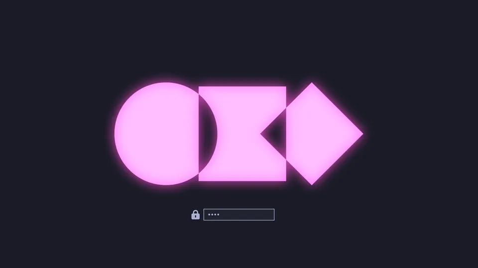
All 22 built-in themes
Rendered by Omarchy's own renderer and switched from the menu. These are the themes' own previews.
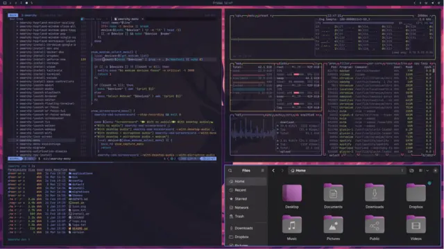
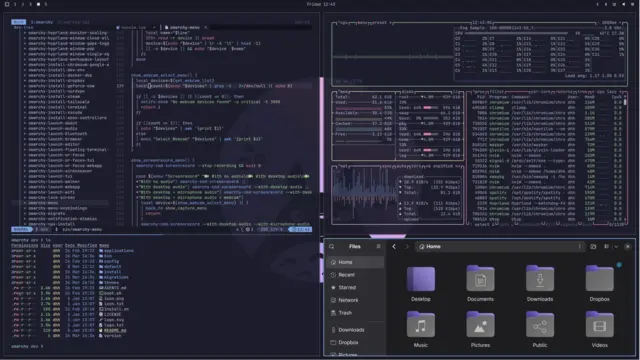
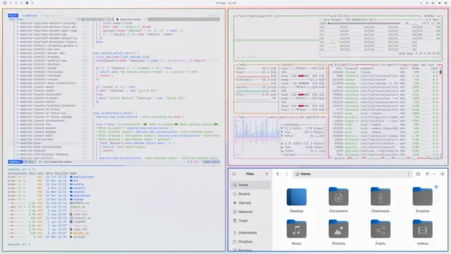
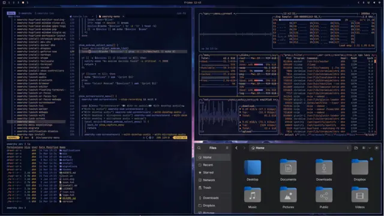
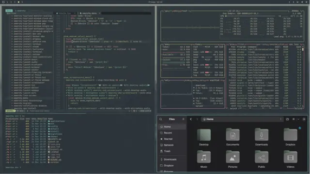
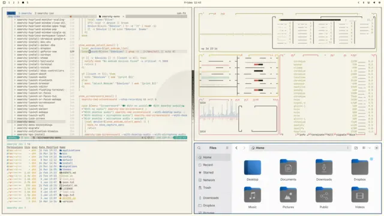
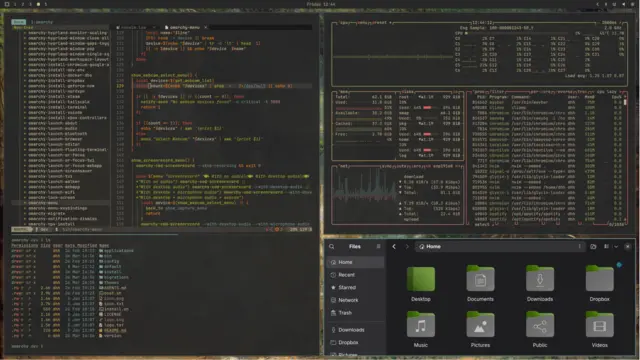
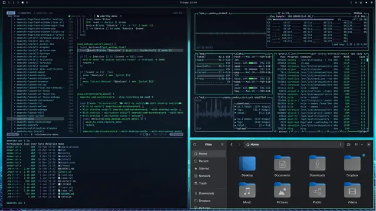
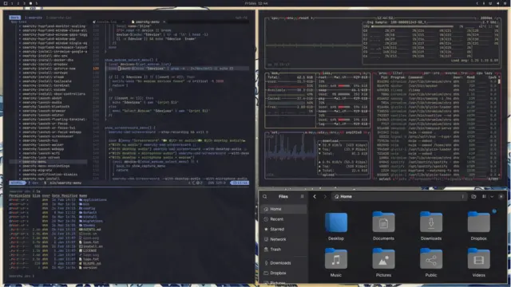
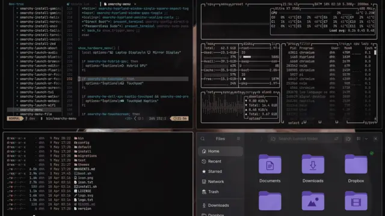
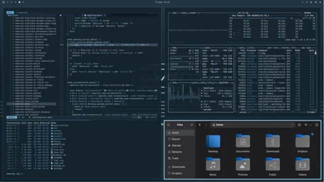
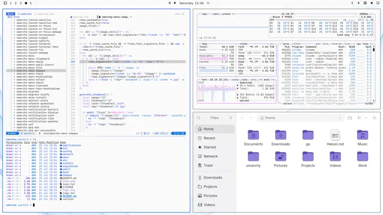
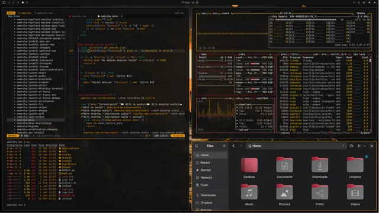
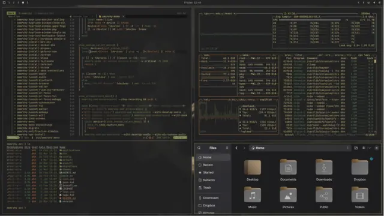
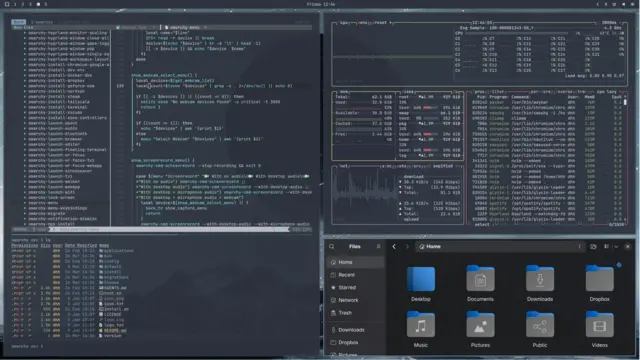
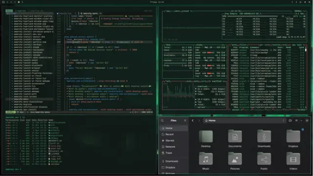
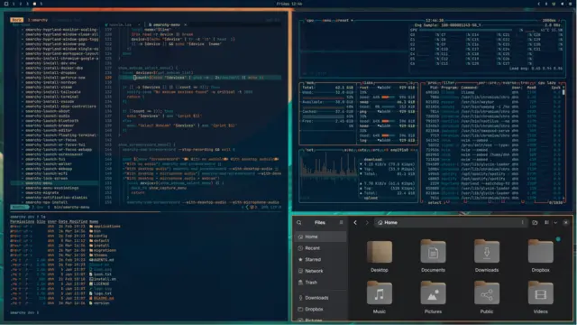
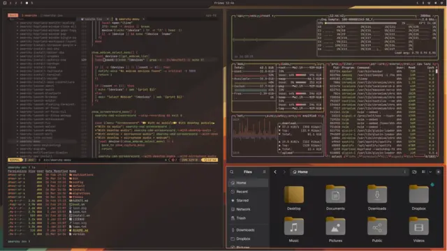
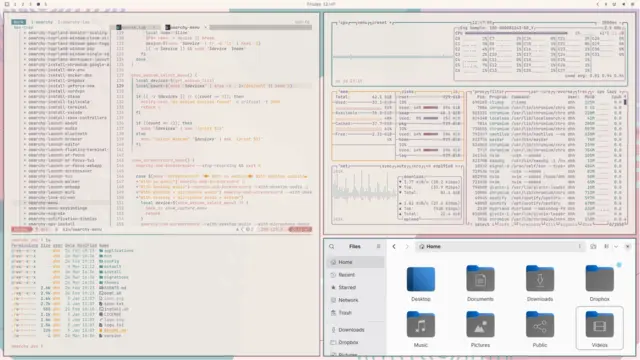
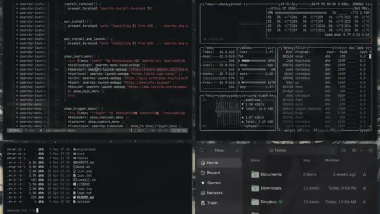
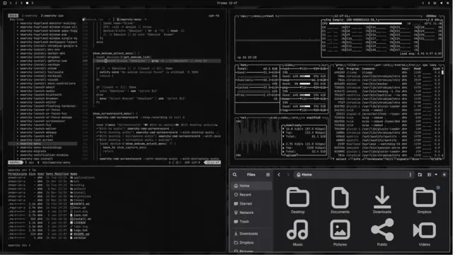
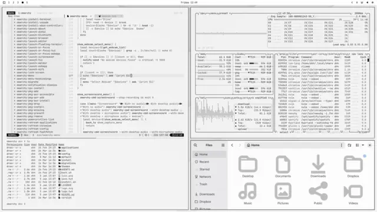
Plus 112 community themes from Omarchy's manual, installed from the menu and pinned in theme.json.
The active theme's palette is omarchy.theme, for theming the rest of your config (Stylix, …).
What comes with it, and what you pick
The bare desktop is Omarchy's essentials. Its opinions are one switch away, and nothing is installed that you didn't ask for.
The desktop
Installed with omarchy.enable, each group with options to turn it off.
- Integrated tools and services: screenshots, recording, OCR, printing, input methods, fonts
- Default apps (
omarchy.defaultApps.<id>.enable,omarchy.terminal,omarchy.browser) - The CLI setup (
omarchy.shell,omarchy.cli.<tool>) - TUI launchers: Docker, Disk Usage
Omarchy's opinions
With omarchy.ecosystem.enable, or per layer: omarchy.apps, omarchy.webapps and omarchy.development, each with enable and picks.
- Apps: LibreOffice, Obsidian, OBS, Kdenlive, Pinta, Xournal++, omacut, omacalc, omawrite, aether, …
- Web apps: HEY, YouTube, WhatsApp, …
- Developer tools and Docker
- The keybinds that launch them
Only what you list
Never on by default, not even with the ecosystem.
- AI agents:
omarchy.agents,omarchy.defaultAgent - Their CLIs, such as gh and Playwright:
omarchy.tools - The agent integration itself is always there
- Shell plugins:
omarchy plugin addas upstream, or pinned withomarchy.plugins;omarchy plugin doctorsays what one needs
The full list is in PACKAGES.md, and every entry is data for installers:
nix eval --json github:nix-desktops/omarchy#lib.catalog.
Get started
On any NixOS install, the minimal ISO is enough. Or add it to the flake you already have.
A new machine
Start from the host template, then set your user name and time zone.
nix flake new -t github:nix-desktops/omarchy#host ~/nixos
cd ~/nixos
$EDITOR configuration.nix
nixos-generate-config --show-hardware-config \
> hardware-configuration.nix
git init && git add -A
sudo nixos-rebuild switch --flake .#omarchyReboot into Omarchy's login screen. From then on the Omarchy menu (SUPER+SPACE) installs apps, switches themes and updates the system by editing ~/nixos/omarchy/*.json and rebuilding.
An existing config
Import the NixOS module next to Home Manager's; every user in omarchy.users gets the desktop.
{
inputs.omarchy.url = "github:nix-desktops/omarchy/stable";
inputs.omarchy.inputs.nixpkgs.follows = "nixpkgs";
outputs = { nixpkgs, home-manager, omarchy, ... }: {
nixosConfigurations.my-machine = nixpkgs.lib.nixosSystem {
modules = [
home-manager.nixosModules.home-manager
omarchy.nixosModules.default
{
omarchy = {
enable = true;
users = [ "me" ];
stateDir = ./omarchy; # apps.json, theme.json, …
configDir = "/home/me/nixos"; # this flake
# ecosystem.enable = true; # Omarchy's apps, web apps, dev tools
};
home-manager.users.me = {
home.stateVersion = "26.05";
omarchy.keybinds."SUPER + SHIFT + M".launch = "spotify";
omarchy.agents = [ "claude" ];
omarchy.defaultAgent = "claude";
};
}
];
};
};
}stableThe newest Omarchy 4 release
rcThe newest pre-release, or stable when that's newer
edgeOmarchy's development branch
mainThis flake's own development
The branch you follow is your Omarchy release channel. Every 6 hours CI checks upstream, runs the full flake check with a VM that boots the desktop, and moves a channel only when it passes.
Install it with the NixOS Configurator
A graphical installer on a live USB image. Pick Omarchy as your desktop and it writes these options into a flake you own.
- “Install the entire ecosystem” sets
omarchy.ecosystem.enable - Apps and web apps preselected in its stores, still yours to change
- Pick AI agents and the default one
- Omarchy's keybinds listed; remove them or add your own
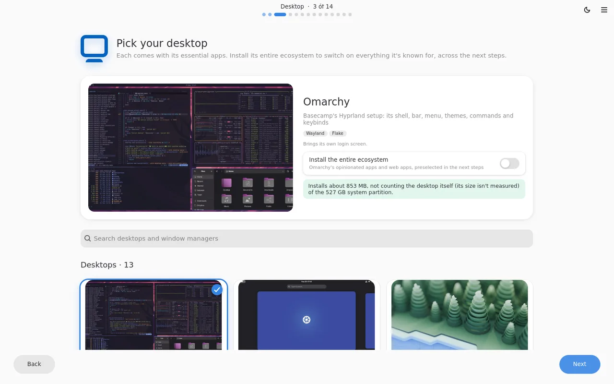